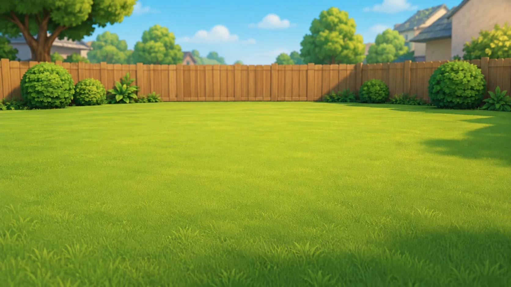
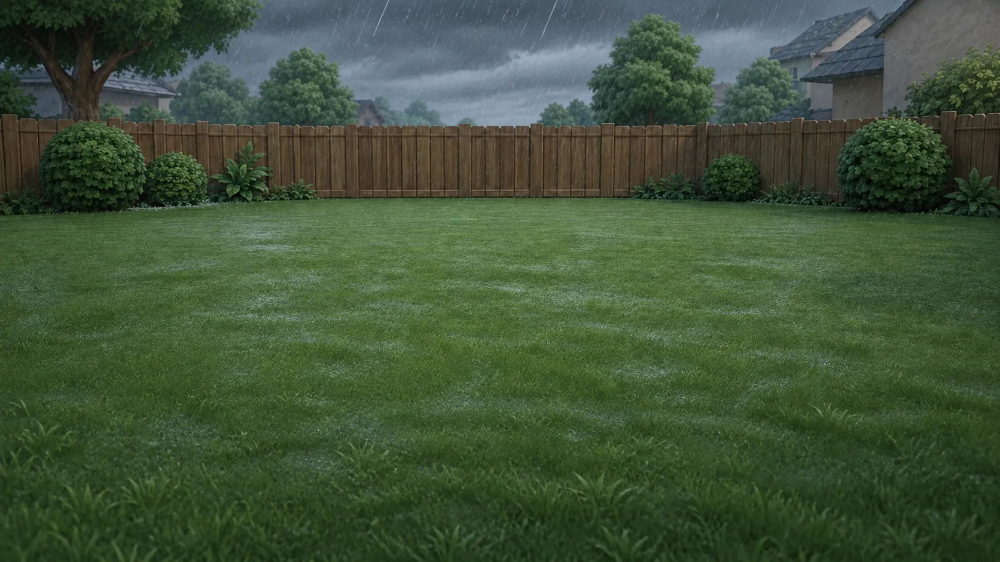
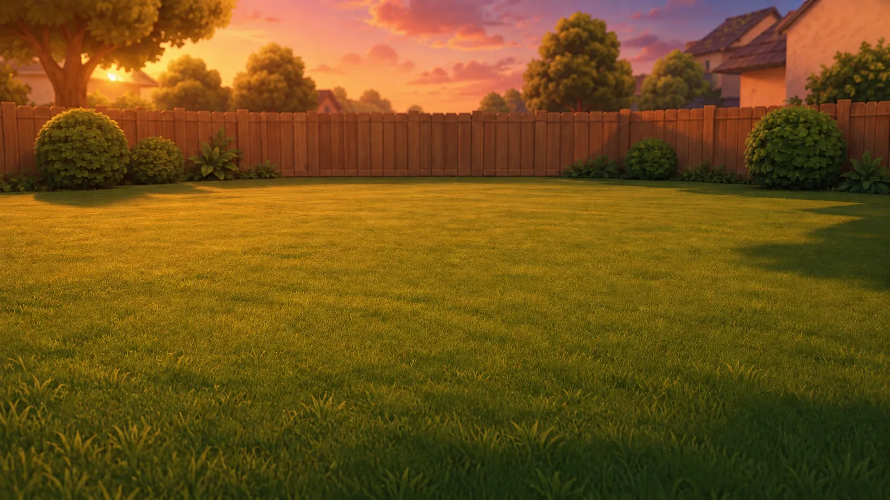
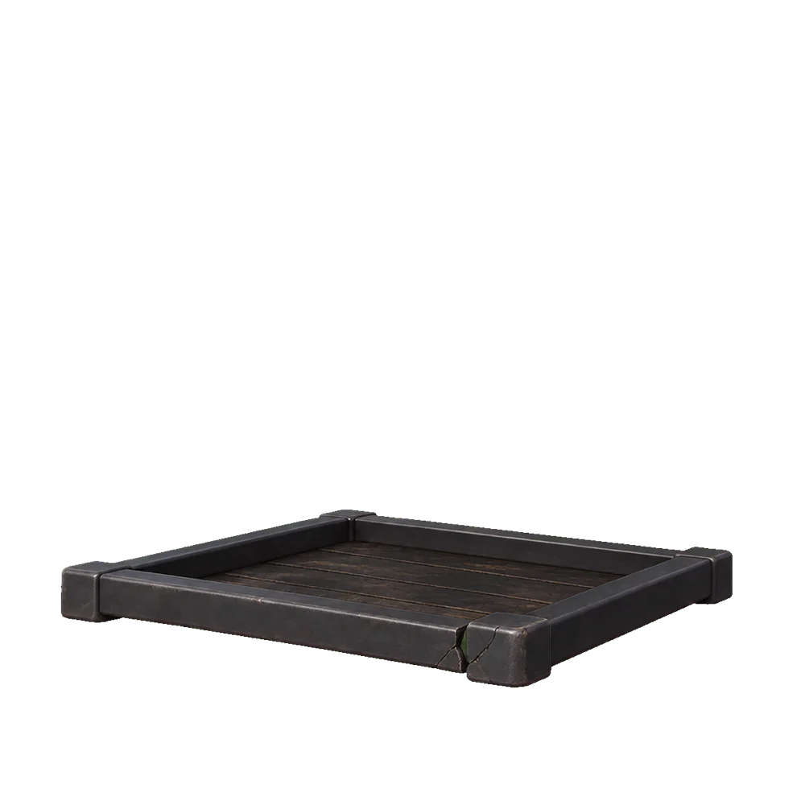
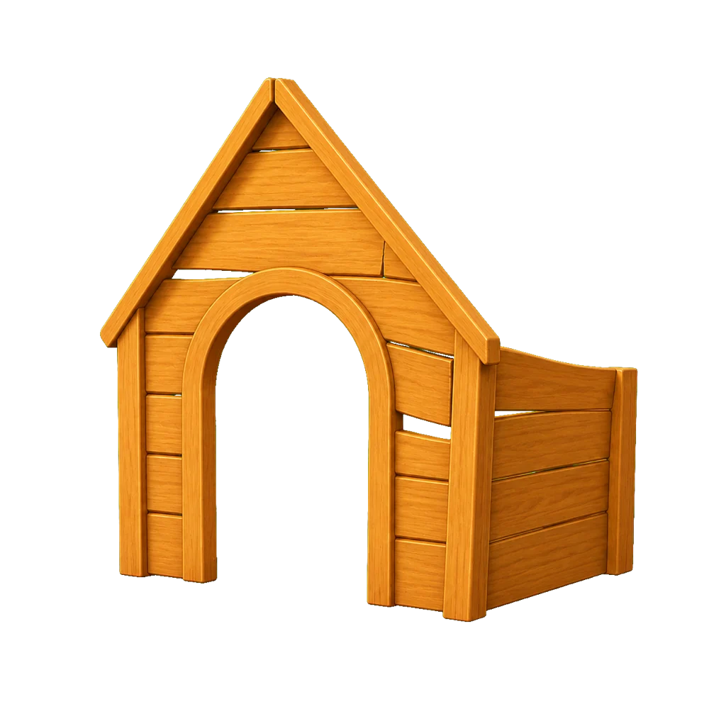
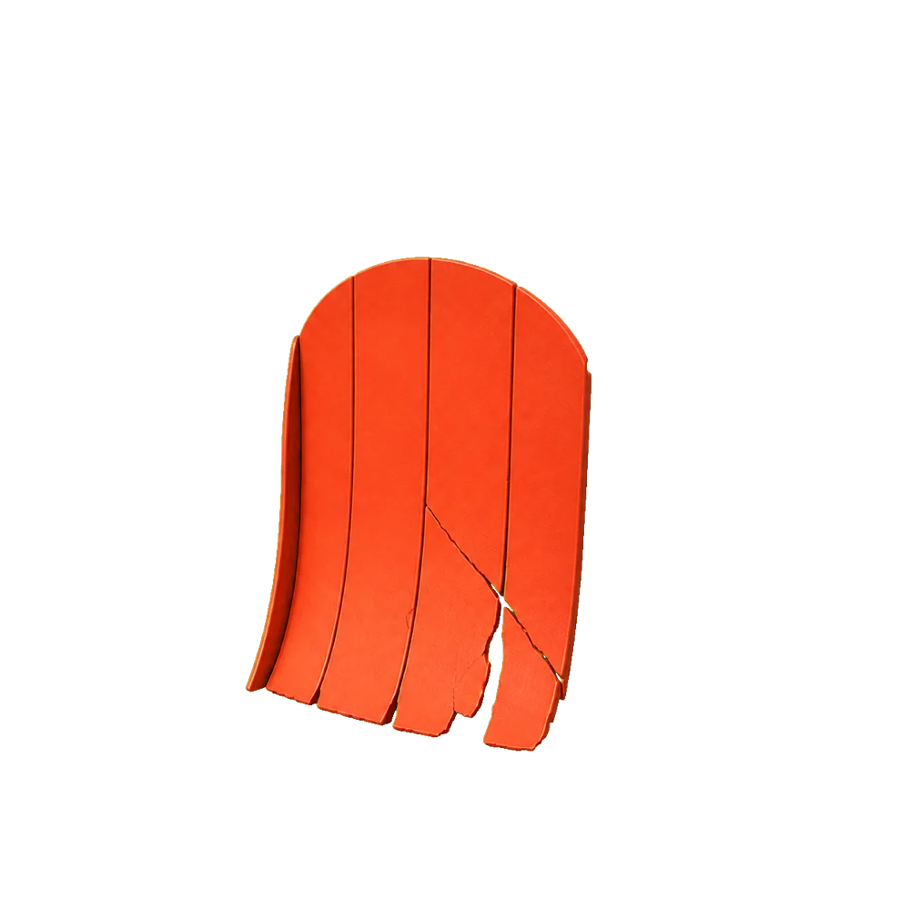
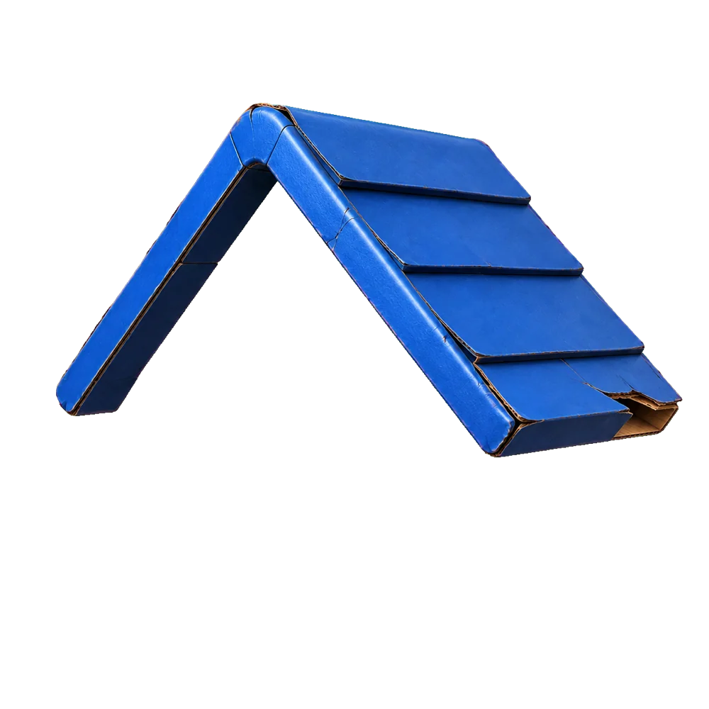
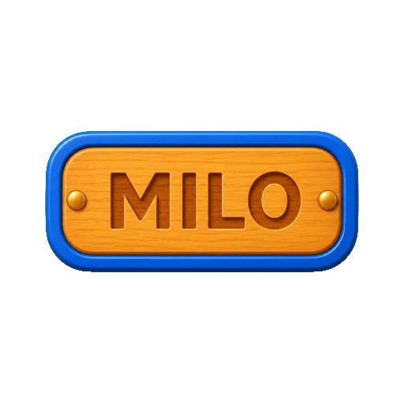
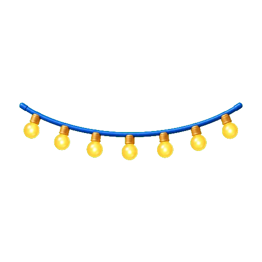
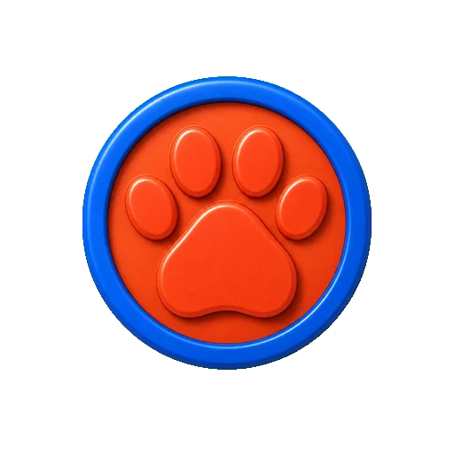
00:00
1/10
REBUILD MILO’S HOME
Work as a team. Decide each part’s job, share your evidence, choose a material and test it. Then survive the final test.
SOUND
CLICK EACH PART TO FIND OUT
ROOF
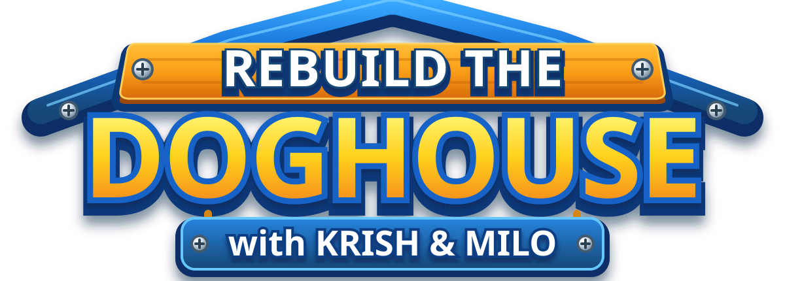
ASSIGN THE INSPECTORS
ROOF
3
PLAYER 1
Your turn.
Getting the tools ready…
0%
Please turn your device sideways
or use a larger screen 🙂
or use a larger screen 🙂